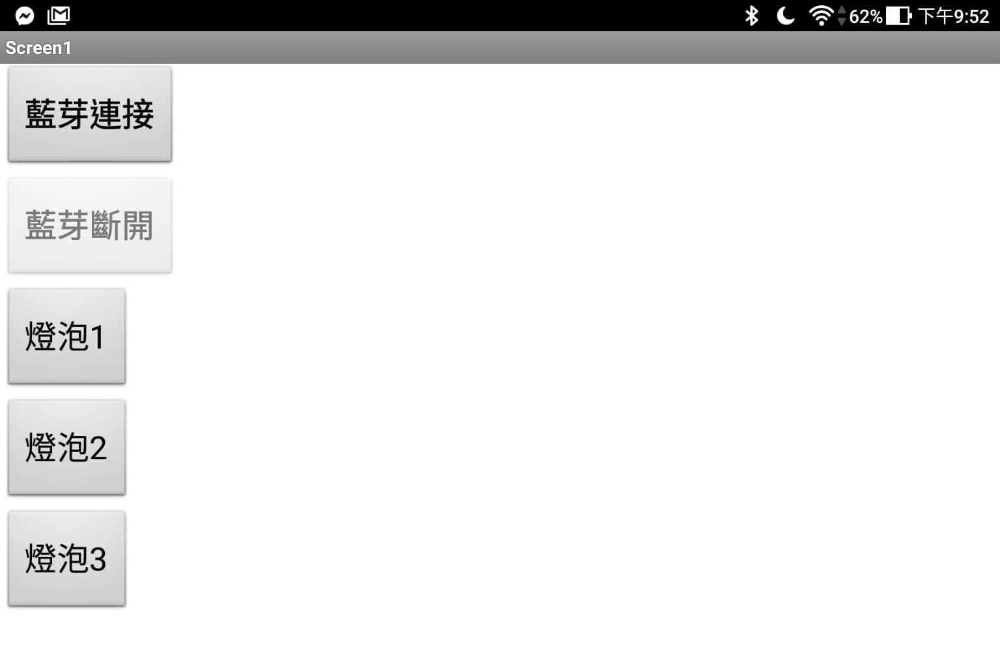

<!DOCTYPE">
	<html xmlns="http://www.w3.org/1999/xhtml">

	<head>
		<meta http-equiv="Content-Type" content="text/html; charset=utf-8" />
		<title>以毒狗--專題相關</title>
		<link rel="icon" href="index/favicon.png" type="image/png" />
		<meta name="keywords" content="" />
		<meta name="description" content="" />
		<link href="http://fonts.googleapis.com/css?family=Source+Sans+Pro:200,300,400,600,700,900" rel="stylesheet" />
		<link href="default.css" rel="stylesheet" type="text/css" media="all" />
		<link href="fonts.css" rel="stylesheet" type="text/css" media="all" />

		<!--[if IE 6]><link href="default_ie6.css" rel="stylesheet" type="text/css" /><![endif]-->

	</head>

	<body>
		<div id="page" class="container">
			<div id="header">
				<div id="logo">
					
					<h1><a href="index.html">以毒狗</a></h1>
					<span>Design by <a href="" rel="nofollow">以毒狗洨組</a></span>
				</div>
				<div id="menu">
					<ul>
						<li><a href="index.html" accesskey="1" title="">首頁</a></li>
						<li><a href="record1.html" accesskey="2" title="">活動紀錄</a></li>
						<li class="current_page_item"><a href="project.html" accesskey="3" title="">專題相關</a></li>
						<li><a href="members.html" accesskey="4" title="">組員連結</a></li>
					</ul>
				</div>
			</div>

			<div id="main">

				<div id="welcome">
					<div class="title ">
						<h2><br>APP網頁應用 專題相關</h2>

						<a href="#4/18"><br>4/18紀錄</a>
						<a href="#5/12"><br>5/12紀錄</a>
						<a href="#5/13"><br>5/13紀錄</a>
						<a href="#5/19"><br>5/19紀錄</a>
						<a href="#5/21"><br>5/21紀錄</a>
						<a href="#5/28"><br>5/28紀錄</a>
						<a href="#???"><br>????紀錄</a>
					</div>
				</div>
				<div id="featured">
					<ul class="style1">
						<div id="4/18">
							<li class="first">
								<div id="4/18">
									<p class="date bgc1"><a>April<b>18</b></a></p>
									<h3><strong>專題紀錄--構想</strong> </h3>


									<p></p>
									<p>
									<h3>初步構想是利用光線吸引受測者面向燈泡後，以燈泡前方的紅外線接收器接收受測者頭上所帶，有經過編碼的紅外線發射器的編碼。成功接收後模組發出受測者喜歡的聲音，使受測者會對這個裝置產生興趣，進而達成機構老師們希望的目標。
									</h3>
									</p>
									<p>
									<h3>由於若要使用編碼，arduino並不能同時收發紅外線，勢必要使用多片並整合起來。至於光源，機構那邊說使用燈泡，可能是必須使用繼電器來做才行。而因為構想上也要多個光源(類似打地鼠)，應該需要多路繼電器。
									</h3>
									</p>
								</div>

							</li>
						</div>

						<li>
							<div id="5/12">
								<p class="date bgc2"><a>MAY<b>12</b></a></p>
								<h3><strong>專題紀錄</strong> </h3>
								<p>
								<h3>與佳盈老師和助教討論過後，認為在受試者頭上裝設發射器是件不太可能的事情。因此我們決定先轉往不需要設置發射器的方向，先做出利用人眼判斷受試者是否有達成目標後，再以其他人手上的控制器進行操控，給予受試者回饋。
								</h3>

								</p>

							</div>
						</li>


						<li>
							<div id="5/13">
								<p class="date bgc1"><a>MAY<b>13</b></a></p>
								<h3><strong>專題紀錄</strong> </h3>
								<p>
								<h3><br>今天我們先試驗按鈕控制隨機亮燈並在未繼續操作下一動作前維持當前的狀態，使受試者有充足的時間進行反應，同時輔助者可以觀察受試者在此狀況下的動作。若是受試者達成所預期之目標，輔助者便可使用手上已預先安裝藍牙程式之裝置進行回饋以及下一步的操作。
								</h3>
								<br>
								<h3><br>▼我們使用nano板來做為測試主板，並先以實體按鈕來作為裝置程式完成前測試之用途</h3>
								
								<br>

								<h3><br>在完成實體按鍵測試後，我們決定增加藍芽模組並進行測試。同時以App
									Inventor開發Android裝置上控制藍芽模組之程式。藍芽程式完成後，以字串形式和主板進行通訊，主板再對字串進行判斷執行動作。</h3>
								<h3><br>而主板程式部分，我們認為由於是人來控制，所以在變換燈泡前設置一段時間來回饋受試者聲音和光，以促進受試者繼續進行這個測驗。</h3>
								<br>
								<h3><br>▼增加了藍芽模組、mp3模組以及2W喇叭。</h3>
								
								<br>
								<h3><br>▼控制裝置之簡易介面。</h3>
								
								<br>
								<a href="code_ver1.0.html" target="_blank"><div style=" color: cornflowerblue; font-size:20px;">半自動程式碼</div></a>
								<br>
								
								<h3><br>▼控制功能影片。</h3>
								<iframe width="595" height="350" src="https://www.youtube.com/embed/1_QcS2hQ8ZI"
									frameborder="0"
									allow="accelerometer; autoplay; encrypted-media; gyroscope; picture-in-picture"
									allowfullscreen></iframe>
								<br>

							</div>

						</li>

						<li>
							<div id="5/19">
								<p class="date bgc1"><a>MAY<b>19</b></a></p>
								<h3><strong>專題紀錄</strong> </h3>
								<p></p>
								<h3>機構的人說半自動的模式不行，並且他們接受在小朋友頭上戴上裝置。所以目前規劃為製作一開始的構想，利用紅外線對應以判斷。 </h3>
							</div>
						</li>

						<li>
							<div id="5/21">
								<p class="date bgc1"><a>MAY<b>21</b></a></p>
								<h3><strong>專題紀錄</strong> </h3>
								<p></p>
								<h3>我們為了製作全自動偵測是否對準，使用了紅外線收發，以編碼形式來判斷有沒有正對，在正對時，編碼會是我們所發射的編碼，稍微有點角度時，編碼會開始出現亂碼。而我們在測試的時候，發現不太穩定，試著加上104電容後，情況有改善。
								</h3>
								<h3>在測試時我們利用LED亮代表有對到，熄滅代表沒對到，有效距離應該為1公尺左右。</h3>
								<a href="code_transmitter.html" target="_blank" ><div style=" color: cornflowerblue; font-size:20px;"><br>發射端程式碼</div></a>
								<a href="code_receiver.html"target="_blank"><div style=" color: cornflowerblue; font-size:20px;"><br>接收端程式碼</div></a>
								<h3><br>▼測試功能影片。</h3>
								<iframe width="595" height="350" src="https://www.youtube.com/embed/OM6Unw6QNGM"
									frameborder="0"
									allow="accelerometer; autoplay; encrypted-media; gyroscope; picture-in-picture"
									allowfullscreen></iframe>
							</div>
						</li>
						<li>
							<div id="5/28">
								<p class="date bgc1"><a>MAY<b>28</b></a></p>
								<h3><strong>專題紀錄</strong> </h3>
								<p></p>
								<h3></h3>
								
								
								
							</div>
						</li>

						<li>
							<div id="???">
								<p class="date bgc1"><a>???<b>??</b></a></p>
								<h3><strong>專題紀錄</strong> </h3>
								<p></p>
								
							</div>
						</li>
					</ul>
				</div>

				<div id="copyright">
					<span>Copyright &copy;以毒狗洨組 </span>
				</div>
			</div>
		</div>

		<style>
			.square {

				border: 1px solid rgba(170, 169, 169, 0.8);
			}

			.bgc1 {
				background: rgba(252, 252, 9, 0.329);
				margin-bottom: 10px;
			}

			.bgc2 {
				background: rgba(16, 143, 255, 0.329);
				margin-bottom: 10px;
			}

			.bgc3 {
				background: rgba(196, 196, 196, 0.6);
				margin-bottom: 10px;
			}
		</style>
	</body>

	</html>